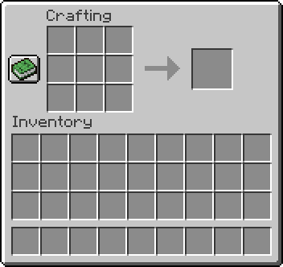
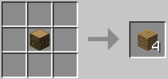
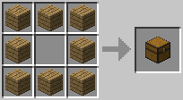
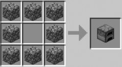
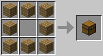
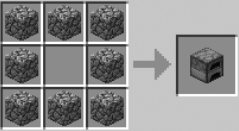

Players in Survival or Adventure always have access to the 2×2 crafting grid from their inventory screen. Crafting recipes that are at most 2×2 can be made there. These include wood planks, sticks, crafting tables, torches and some shapeless recipes. To craft items using a 3×3 grid, create a crafting table, place it in the world, and press use while facing it. This brings up an interface with a 3×3 crafting grid, which the player can use to craft any crafting recipe in the game. Some recipes do not require their ingredients to be arranged in a specific way on the crafting grid. These are commonly known as shapeless recipes. For example, players can craft a fermented spider eye by placing its ingredients anywhere within the grid. On the other hand, many recipes must have their ingredients placed in the correct relative positions on the crafting grid. These are commonly known as shaped recipes. Ingredients in shaped recipes can be ‘moved’ up, down, left, or right. They can also be flipped side-ways. For example, a 3×1 recipe, such as bread, can be made using the top, middle, or bottom row of the 3×3 grid, but it cannot be made using the 2×2 grid because it needs to be three items wide, and a bow may be made with the strings placed on the left instead of on the right. There are recipes that may not be moved or mirrored in this way. These are commonly known as fixed recipes. Fixed recipes can be added by data packs or mods. No fixed recipes are available in vanilla Minecraft.
 
 


